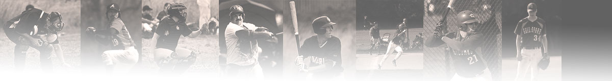

The Guildford Baseball and Softball Club was founded in 1992, originally playing as the Wokingham Millers. As the club grew its roots in Guildford, it rebranded as the Guildford Mavericks — a name that's become synonymous with baseball in Surrey.
Over three decades, more than 150 players have pulled on a Mavericks jersey in competitive play. The club has built itself from the ground up — quite literally. We raised the funds and laid the foundations for our own baseball diamond at Kings College, Guildford.
Today we field two adult teams in the British Baseball Federation (BBF) and run a thriving junior programme on Saturday mornings. The club is still run by people who love the game — volunteers, players, coaches, and community.

The Wokingham Millers begin playing baseball in the Surrey area. Community is the foundation from day one.
The club relocates to Guildford and rebrands as the Mavericks, establishing deep roots in the local community.
Membership swells. The Guildford Millers form as a second adult team, giving more players competitive baseball in the BBF.
A landmark moment — the club secures a dedicated baseball diamond at Kings College, Guildford. Purpose-built, properly ours.
Saturday morning sessions for children 14 and under begin, coached by experienced club members and qualified coaches.
Mavericks (BBF Div 3 South) and Millers (BBF Div 5 South/Central) — plus junior baseball every Saturday.
From competitive league baseball to beginner-friendly junior sessions.
Our flagship team competing in BBF Division 3 South. Sunday fixtures, Thursday evening training. Experienced and returning players welcome.
Competing in BBF Division 5 South/Central. A great entry point for players building competitive experience. All levels welcome.
A third adult team launching in 2027 — welcoming players of all abilities including softball players and newcomers to baseball.
The Guildford Mavericks has always been about the game and the people who love it. Our aim isn't to produce elite athletes — it's to give anyone in Surrey the chance to play competitive baseball in a welcoming, community-driven environment.
"Our aim is not only to introduce new players to our club and the sport, but to provide an opportunity to have fun and be active at the same time. You don't need to be the fastest or the strongest — baseball also rewards those who can out-think their opponents."
Never played? Welcome. Played for years? Also welcome. We have three teams so everyone finds their level.
Come to training before committing to anything. No kit needed, no money, just show up on a Thursday evening.
Post-game gatherings, club events, and a team culture built on respect and friendship. Baseball, done right.
Your first training session is free. Come and see what the Mavericks are all about.